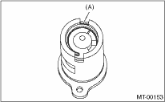
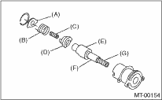

MANUAL TRANSMISSION AND DIFFERENTIAL(5MT) > Reverse Check Sleeve
1. Cover the reverse check sleeve with a cloth, and remove the snap ring using a screwdriver.
NOTE:
If deformed or worn, replace with a new snap ring

|
(A) |
Snap ring |
2. Remove the reverse check plate, reverse check spring, reverse check cam, return spring (5th-Rev), reverse accent shaft, return spring cap and return spring (1st-2nd).

|
(A) |
Reverse check plate |
|
(B) |
Reverse check spring |
|
(C) |
Return spring (5th-Rev) |
|
(D) |
Reverse check cam |
|
(E) |
Reverse accent shaft |
|
(F) |
Return spring cap |
|
(G) |
Return spring (1st-2nd) |
3. Remove the O-ring.
NOTE:
• For the reverse check sleeve, make sure only to use an undamaged O-ring with no scratches on it.
• Be careful not to damage the adjusting shim between reverse check sleeve assembly and the case.